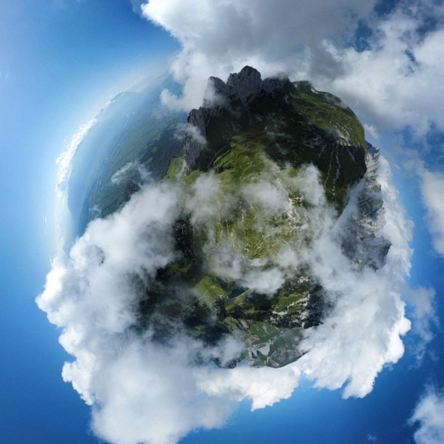

The Edge of the Alps
SAXER LÜCKE · APPENZELL ALPS · SWITZERLAND
En lo alto de los ondulados paisajes del este de Suiza, Saxer Lücke se alza como uno de los miradores de montaña más espectaculares de los Alpes de Appenzell.
Conocida por sus imponentes paredes de caliza y sus amplios paisajes alpinos, esta cresta se ha convertido en un destino imprescindible para senderistas, fotógrafos y amantes de la naturaleza que buscan uno de los escenarios más emblemáticos del país.
Pero más allá de su extraordinaria belleza, Saxer Lücke ofrece algo mucho más difícil de describir: una intensa sensación de amplitud, de exposición a la montaña y de conexión con el paisaje que pocos lugares consiguen transmitir.

Al filo de la montaña
Llegar hasta Saxer Lücke forma parte de la experiencia.
El sendero asciende suavemente entre praderas alpinas antes de revelar las espectaculares formaciones rocosas que caracterizan esta región. A medida que el camino se aproxima a la cresta, las enormes paredes de piedra caliza emergen del paisaje, creando un contraste fascinante entre los acantilados verticales y los suaves pastos que se extienden a sus pies.
El tiempo atmosférico añade un componente aún más dramático. Las nubes se deslizan entre las montañas, ocultando las cumbres por momentos para volver a descubrirlas apenas unos minutos después, transformando el paisaje de forma constante.
El resultado es un lugar que nunca muestra exactamente el mismo rostro dos veces.
Esculpido por el tiempo
Las singulares formaciones rocosas de Saxer Lücke son el resultado de millones de años de historia geológica.
Sus impresionantes paredes están compuestas principalmente por calizas depositadas en antiguos mares mucho antes de que existieran los Alpes. Con el paso del tiempo, las fuerzas tectónicas elevaron estos sedimentos por encima del nivel del mar, plegándolos y modelándolos hasta dar lugar a la espectacular cordillera que hoy contemplamos.
Desde entonces, el viento, el agua y el hielo han seguido esculpiendo el paisaje, creando las afiladas crestas y las paredes verticales que convierten a Saxer Lücke en uno de los enclaves naturales más reconocibles de Suiza.
Entre las nubes
Uno de los recuerdos más inolvidables de una visita a Saxer Lücke es contemplar el constante diálogo entre las montañas y el cielo.
Durante los meses de verano, el aire cálido que asciende desde los valles genera con frecuencia bancos de niebla y nubes bajas que fluyen sobre las crestas como si fueran lentos ríos suspendidos en el aire.
Para los fotógrafos, estas condiciones ofrecen oportunidades inagotables. La luz atraviesa los claros entre las nubes, iluminando unas zonas del paisaje mientras otras permanecen envueltas en la sombra, creando escenas tan espectaculares como efímeras.
La montaña vista desde el cielo
Aunque el propio mirador ofrece unas vistas extraordinarias, la fotografía aérea revela una dimensión completamente diferente del paisaje.
Desde el aire, la verdadera escala de Saxer Lücke se hace aún más evidente. La espectacular cresta se despliega sobre la ladera, separando profundos valles y praderas alpinas mientras las nubes cruzan lentamente las cumbres.
Vista desde esta perspectiva, la montaña deja de parecer un simple destino para excursionistas y se convierte en un auténtico monumento natural modelado por inmensas fuerzas geológicas.
La combinación de abruptas paredes de caliza, laderas cubiertas de un intenso verde y nubes en constante movimiento crea un escenario cambiante que parece pertenecer a otro mundo.
Una visión de otro planeta
Vista desde las alturas, Saxer Lücke se transforma en un universo propio. Rodeada de nubes y suspendida sobre los Alpes de Appenzell, la cresta parece una isla flotando entre la tierra y el cielo.
{kind=link}

Un paisaje al que siempre volver
Saxer Lücke es mucho más que un mirador.
Es un lugar donde la geología, la meteorología y la inmensidad del paisaje se combinan para dar forma a uno de los escenarios montañosos más singulares de Suiza.
Ya sea recorriendo sus senderos, contemplándolo desde una cresta lejana o fotografiándolo desde el aire, este rincón ofrece infinitas perspectivas, cada una capaz de revelar un nuevo matiz sobre los Alpes y la fuerza que los ha modelado durante millones de años.
Para los fotógrafos, representa una fuente inagotable de inspiración.
Para los senderistas, un destino inolvidable.
Y para cualquiera que contemple sus imponentes paredes, un recordatorio de los paisajes extraordinarios que todavía permanecen escondidos en el corazón de Europa.
Artículos relacionados
Más al oeste, los Alpes berneses revelan otro de los grandes paisajes de Suiza. Donde las montañas tocan el cielo. Un reportaje fotográfico desde Bachalpsee y la región de Jungfrau.
Ficha fotográfica
Ubicación: Saxer Lücke, Alpes de Appenzell, Suiza
Altitud: Aproximadamente 1.850 metros
Mejor época: Verano y principios de otoño
Ideal para: Senderismo, fotografía de paisaje, fotografía con dron y paisajes alpinos
Fotografías y texto: Carles Torres